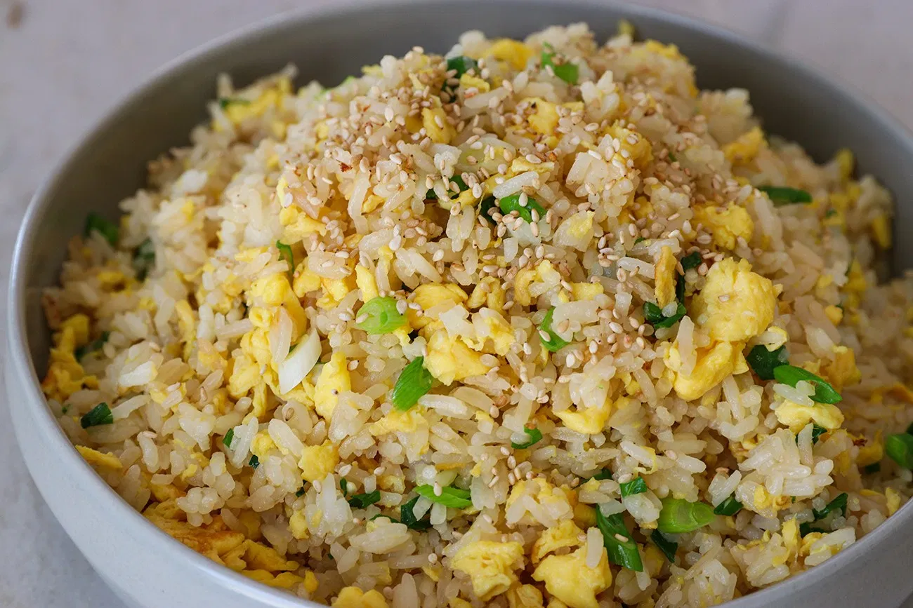

Egg Fried Rice

Description
Basically, old rice with eggs and soy sauce in it. Makes for a lovely pairing if you want for more than just basic
rice.
I have a theme now, I must stick to it.
Ingredients
- Cooking oil
- Eggs
- Cold rice (I recommend jasmine rice)
- Salt or/and soy sauce
- Green onion (optional)
Steps
- Beat eggs well with pinch of salt and slice green onions. Set aside.
- Heat a wok or a skillet over high heat; add 1 tbsp cooking oil and swirl to coat. Pour beaten eggs into the wok
and scramble.
- When the eggs are cooked 3/4 way, add remaining 2 tbsp cooking oil and cold jasmine rice. A day old cold jasmine
rice is my absolute favorite to make fried rice. It has beautiful aroma and fluffy texture that can hold the
shape well while frying.
- Breakdown rice and mix it with the eggs.
- Add soy sauce around the edge of the wok, so it will burn slightly for the smoky umami flavor. Add salt to your
taste and mix everything well. Reduce heat to low if you need to.
- Turn off the heat, stir in green onions.